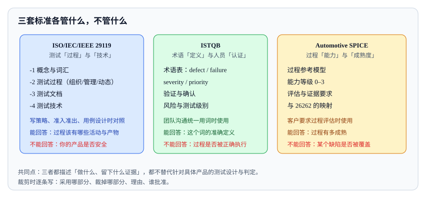

<script type="application/json" id="tb-manifest">
{
  "schema": "tb/1",
  "id": "L-001-003",
  "title": "通用测试标准地图：29119 与 ISTQB",
  "module": "M01",
  "concepts": [
    "standards-map"
  ],
  "target_level": "L3",
  "minutes": 45,
  "objectives": [
    "能说明 29119 与 ISTQB 的用途边界",
    "能把标准映射到测试过程、文档与技术活动",
    "能在项目中做标准裁剪并记录理由"
  ],
  "prerequisites": [],
  "exercises": [
    "EX-003-01",
    "EX-003-02"
  ],
  "resources": [
    "R-29119-2",
    "R-29119-4",
    "R-ISTQB"
  ],
  "objective_map": {
    "O1": [
      "EX-003-01"
    ],
    "O2": [
      "EX-003-02"
    ],
    "O3": [
      "EX-003-02"
    ]
  }
}
</script>
<article class="tb-lesson">
  <header>
    <p class="tb-eyebrow">M03 · 标准、评价与认证</p>
    <h1>通用测试标准地图：29119 与 ISTQB</h1>
    <p><strong>学完你能：</strong>把 ISO/IEC/IEEE 29119 与 ISTQB 映射到项目活动、产物和裁剪记录，并说清它们不能替代什么。</p>
  </header>
  <section class="tb-retrieval">
    <h2>开课前 3 分钟：先回忆</h2>
    <ol>
      <li>29119-2 和 29119-4 分别管什么？</li>
      <li>ISTQB 能替代产品符合性吗？</li>
    </ol>
    <details>
      <summary>参考答案</summary>
      <p>29119-2 管测试过程，29119-4 管测试技术；ISTQB 是术语和知识体系，不是产品符合性或认证。</p>
    </details>
  </section>
  <aside>
    <p><strong>本课主读：</strong>R-29119-2《ISO/IEC/IEEE 29119-2:2013 测试过程》。重点看组织级、测试管理级和动态测试级三层过程如何分工。</p>
  </aside>
  <section>
    <h2>一、投标文件里的“符合 29119”</h2>
    <p>某团队在投标文件里写“测试过程符合 ISO/IEC/IEEE 29119，测试人员均具备 ISTQB 认证”。客户追问：“你们用的是 29119 的哪几个部分？测试文档对应哪一部分？ISTQB 认证和产品符合性是什么关系？”团队答不上来。问题不是他们没做测试，而是把“标准”“认证”“方法论”混成了一个词。</p>
    <p>29119 是软件测试的国际标准系列，回答“测试过程怎么组织、文档写什么、技术怎么用”。ISTQB 是测试知识体系与术语表，回答“行业里这些词是什么意思”。两者都不是产品安全标准，也不能替代认证。</p>
  </section>
  <section>
    <h2>二、为什么需要标准</h2>
    <ul>
      <li><strong>共同语言：</strong>让开发、测试、客户、审核方对“测试计划”“测试条件”“测试用例”有相同理解。</li>
      <li><strong>过程基线：</strong>提供可裁剪的流程，避免每个项目从零设计。</li>
      <li><strong>审计与合同：</strong>客户和监管方可以要求过程证据。</li>
      <li><strong>改进参照：</strong>用标准对照差距，而不是凭感觉改进。</li>
    </ul>
    <p>标准也有边界：它通常不规定具体产品的阈值、场景和风险接受准则；也不保证产品质量。标准是“应该覆盖什么”的框架，具体怎么做仍要由项目和领域标准决定。</p>
    <figure>
      
      <figcaption>图 1：三套体系覆盖的是过程、词汇与组织成熟度；都不替代针对具体产品的测试设计与符合性证明。</figcaption>
    </figure>
  </section>
  <section>
    <h2>三、29119 的分工</h2>
    <table>
      <thead>
        <tr><th>部分</th><th>内容</th><th>回答的问题</th><th>典型产物</th></tr>
      </thead>
      <tbody>
        <tr><td>29119-1</td><td>概念与术语</td><td>测试、测试项、测试过程是什么？</td><td>术语表、概念模型</td></tr>
        <tr><td>29119-2</td><td>测试过程</td><td>组织级、管理级、动态测试级分别做什么？</td><td>测试策略、测试计划、测试报告</td></tr>
        <tr><td>29119-3</td><td>测试文档</td><td>计划、设计、用例、报告应该包含什么？</td><td>文档模板、评审记录</td></tr>
        <tr><td>29119-4</td><td>测试技术</td><td>等价类、边界值、判定表、状态迁移怎么用？</td><td>测试设计说明、用例集</td></tr>
        <tr><td>29119-5</td><td>关键字驱动测试</td><td>测试资产如何复用和自动化？</td><td>关键字库、自动化框架</td></tr>
      </tbody>
    </table>
    <p>注意 29119-2 的层级：组织级过程定义“公司怎么测”，测试管理级定义“这个项目怎么测”，动态测试级定义“具体怎么设计、实现、执行”。写测试策略时主要对照管理级和动态测试级。</p>
  </section>
  <section>
    <h2>四、ISTQB 是什么，不是什么</h2>
    <p>ISTQB 是国际软件测试认证委员会，维护官方术语表和认证知识体系。它的价值在于统一术语、提供测试基础知识框架、帮助团队沟通。它不是法规，也不是产品认证。</p>
    <ul>
      <li><strong>是：</strong>术语参考、培训与认证、测试基础知识体系。</li>
      <li><strong>不是：</strong>产品符合性证明、过程审计标准、安全或行业标准。</li>
      <li><strong>常见误用：</strong>把“团队有 ISTQB 认证”说成“测试过程符合标准”。</li>
    </ul>
  </section>
  <section>
    <h2>五、把标准映射到项目活动</h2>
    <table>
      <thead>
        <tr><th>项目活动</th><th>参考</th><th>产出</th></tr>
      </thead>
      <tbody>
        <tr><td>制定测试策略</td><td>29119-2</td><td>范围、风险、层级、环境、门禁</td></tr>
        <tr><td>写测试计划</td><td>29119-3</td><td>计划文档、进度、资源、风险</td></tr>
        <tr><td>设计用例</td><td>29119-4</td><td>等价类、边界值、判定表、状态迁移</td></tr>
        <tr><td>统一术语</td><td>ISTQB 术语表</td><td>术语表、评审检查表</td></tr>
        <tr><td>自动化复用</td><td>29119-5</td><td>关键字库、测试框架</td></tr>
        <tr><td>安全与认证</td><td>ISO 10218、ISO 13849 等领域标准</td><td>安全验证、认证证据</td></tr>
      </tbody>
    </table>
  </section>
  <section>
    <h2>六、标准裁剪</h2>
    <p>标准不是要求每个项目都完整执行所有条款。裁剪是正常做法，但必须记录：裁剪了什么、为什么、风险是什么、谁批准。例如小项目可以合并测试计划和测试设计文档，但不能省略风险分析和准出条件。</p>
    <p>裁剪记录应包含：条款或活动、裁剪方式、理由、替代措施、风险接受人、复核日期。客户审核时，裁剪记录比“我们全做了”更可信。</p>
  </section>
  <section>
    <h2>七、实例：项目质量计划映射</h2>
    <p>一个机器人项目可以这样写标准映射：</p>
    <ul>
      <li><strong>过程：</strong>采用 29119-2 的管理级和动态测试级过程，组织级过程沿用公司模板。</li>
      <li><strong>文档：</strong>测试计划参考 29119-3，合并设计与执行记录以适配两周迭代。</li>
      <li><strong>技术：</strong>功能测试使用 29119-4 的等价类、边界值、判定表和状态迁移；长尾场景使用场景法。</li>
      <li><strong>术语：</strong>缺陷、测试条件、测试用例等术语采用 ISTQB 定义。</li>
      <li><strong>领域标准：</strong>安全功能按 ISO 10218、ISO 13849 验证；认证按 CE/CQC 要求准备证据。</li>
      <li><strong>裁剪：</strong>不单独产出 29119-3 的完整测试设计说明书，内容合并进用例库；理由是小团队迭代交付，评审记录保留。</li>
    </ul>
    <p>用数字看一下规模：项目有 120 条需求，按 29119-3 映射到 240 条用例；一轮核心回归按每条 45 s 计算，约需 3 小时。这个估算会直接进入回归计划和发布窗口。</p>
  </section>
  <section>
    <h2>八、常见误区</h2>
    <ul>
      <li><strong>把标准当认证。</strong>“符合 29119”不等于“产品通过认证”。</li>
      <li><strong>只写标准号不写部分。</strong>29119 有多个部分，必须说明用了哪一部分。</li>
      <li><strong>把 ISTQB 当法规。</strong>它是知识体系和术语参考。</li>
      <li><strong>生搬硬套文档模板。</strong>标准允许裁剪，关键是记录理由和风险。</li>
      <li><strong>用标准替代领域标准。</strong>29119 不覆盖机器人安全、功能安全和认证。</li>
      <li><strong>裁剪没有记录。</strong>审核时无法解释为什么少了某些活动。</li>
    </ul>
  </section>
  <section>
    <h2>九、检查清单</h2>
    <ul>
      <li>是否说明使用了 29119 的哪些部分？</li>
      <li>标准是否映射到具体活动、产物和责任人？</li>
      <li>ISTQB 是否只用于术语和知识体系，而不是产品符合性？</li>
      <li>裁剪是否有理由、替代措施、风险接受人和复核日期？</li>
      <li>领域标准是否单独列出，没有和通用测试标准混用？</li>
    </ul>
  </section>
  <section>
    <h2>九、标准裁剪评审案例</h2>
    <p>某小团队采用 29119-2 的过程框架，但只有 5 个人、两周迭代。如果完整执行所有文档，测试设计说明书会占掉一半时间。裁剪评审可以这样记录：</p>
    <table>
      <thead>
        <tr><th>条款/活动</th><th>裁剪方式</th><th>理由</th><th>替代措施</th><th>风险接受人</th></tr>
      </thead>
      <tbody>
        <tr><td>独立测试设计说明书</td><td>不单独产出</td><td>两周迭代，文档会滞后于代码</td><td>用例库中包含设计说明和追溯链接</td><td>测试负责人</td></tr>
        <tr><td>正式测试计划评审</td><td>合并到迭代计划会</td><td>团队小，沟通成本低</td><td>计划模板保留范围、风险、门禁</td><td>产品负责人</td></tr>
        <tr><td>组织级过程定义</td><td>沿用公司模板</td><td>项目级不重复定义</td><td>项目计划引用组织模板版本</td><td>质量负责人</td></tr>
        <tr><td>风险分析</td><td>不裁剪</td><td>高风险项必须识别</td><td>—</td><td>—</td></tr>
        <tr><td>准出条件</td><td>不裁剪</td><td>发布决策必须有依据</td><td>—</td><td>—</td></tr>
      </tbody>
    </table>
    <p>裁剪的关键是“保底”：风险分析、准出条件、证据链不能省；文档形式可以合并。客户审核时，看到裁剪记录和替代措施，比看到一套完整但没人看的文档更可信。</p>
  </section>
  <section>
    <h2>十、评审与面试追问</h2>
    <ul>
      <li><strong>问：29119 和 ISTQB 哪个更重要？</strong>答：用途不同。29119 是过程和文档标准，ISTQB 是术语和知识体系；项目通常两者都用，但不能互相替代。</li>
      <li><strong>问：小团队可以不做测试计划吗？</strong>答：可以不单独产出文档，但范围、风险、环境、门禁和证据必须有记录，否则无法管理和审计。</li>
      <li><strong>问：标准裁剪需要谁批准？</strong>答：通常是质量负责人或客户代表；裁剪记录要写理由、替代措施和风险接受人。</li>
      <li><strong>问：客户要求“符合 29119”怎么回应？</strong>答：说明采用了哪些部分、如何裁剪、证据在哪里；不要笼统承诺“完全符合”。</li>
      <li><strong>问：ISTQB 认证对项目有什么价值？</strong>答：统一术语和基础知识，提升沟通效率；不构成产品符合性或过程审计证据。</li>
    </ul>
  </section>
  <div data-tb-exercise="EX-003-01"></div>
  <div data-tb-exercise="EX-003-02"></div>
  <section>
    <h2>十一、标准落地的三个障碍</h2>
    <p><strong>障碍一：把标准当文档模板。</strong>团队照着模板填表，却不理解活动之间的逻辑。结果是文档齐全，风险仍然没被识别。落地标准要先问“这个活动解决什么问题”，再决定怎么记录。</p>
    <p><strong>障碍二：标准与项目节奏脱节。</strong>完整流程需要几周，迭代只有两周。解决方式是裁剪和自动化，把必须的控制点保留，把文档合并到现有工具里。</p>
    <p><strong>障碍三：没有责任人。</strong>标准写了“应该做”，但没人负责检查是否做了。每个活动都要有负责人、产物和复核方式，否则标准只是墙上的海报。</p>
    <p>标准映射表也要随版本更新。需求、架构、市场或客户要求变化时，重新检查采用了哪些部分、裁剪是否仍然合理、证据是否还在。一个一年没更新的映射表，通常已经和项目实际脱节。裁剪记录也要归档，并在客户审核或内部审计时能直接取出；没有归档的裁剪，等于默认没有做。裁剪记录还要写清替代措施，否则审核方无法判断控制点是否还在。记录要有人签字，并定期复核。没有签字和复核的裁剪，不能作为合规证据；这一点在投标和审计中尤其重要，务必留痕，避免口头承诺。审核时只看证据，不看解释；证据不足就会被视为未执行；必须留痕并归档。</p>
  </section>
  <section>
    <h2>十二、延伸思考</h2>
    <ul>
      <li>客户要求“完全符合 29119”怎么回应？说明采用了哪些部分、如何裁剪、证据在哪里。</li>
      <li>ISTQB 认证能作为投标资质吗？可以作为人员能力证明，但不是产品符合性。</li>
      <li>标准更新了怎么办？评估版本差异，更新映射表和裁剪记录，必要时补测试或文件。</li>
    </ul>
  </section>
  <aside class="tb-callout" data-tone="info">
    <p><strong>裁剪的写法：</strong>裁剪不是删条款，是删活动并记录理由。每一条被裁掉的活动，都要写清替代证据与风险接受人。</p>
  </aside>
  <section>
    <h2>小结</h2>
    <p>29119 提供测试过程、文档和技术的国际框架，ISTQB 提供术语和知识体系。把它们放在正确的位置：29119 用来组织测试活动，ISTQB 用来统一说法，领域标准用来解决安全和认证。标准可以裁剪，但裁剪必须记录理由和风险；标准号不能替代产品符合性。</p>
  </section>
</article>
